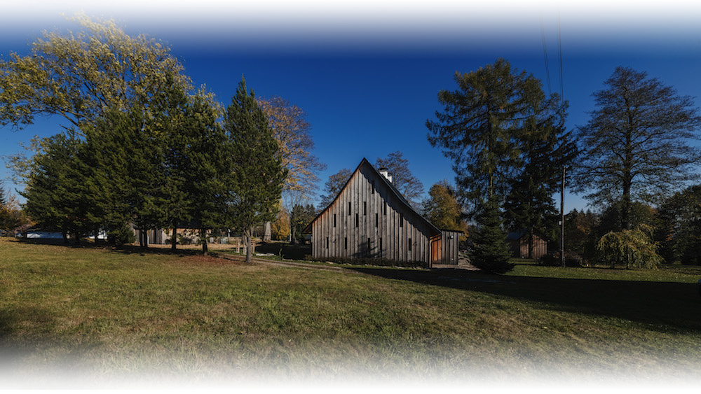

REKONSTRUKCE STARÝCH CHALUP A CHAT

1) Chaloupka Anička
Dostavba chalupy kopíruje historické předlohy a používá soudobé prvky
Chaloupku Aničku bylo nutné přistavět. Budova z počátku minulého století, postavená z vepřovicových cihel s kamenným soklem, si vyžadovala citlivý přístup.
Orlické Záhoří leží v Orlickozáhorské brázdě, na pravém břehu řeky Divoké Orlice. Hlavní hřbet Orlických hor odděluje obec od vnitrozemí Čech. Název obce Orlické Záhoří vznikl v roce 1951 po sloučení obcí Kunštátu, Bedřichovky, Jadrné, Trčkova, Zelenky a Černé Vody. Chalupa se nachází v části Jadrná. Stávající budova z počátku minulého století, je postavená z vepřovicových cihel s omítkou a kamenným soklem, okna jsou dřevěná kastlová a stojí na kamenných základech. Tradiční sedlová střecha je zalomená s eternitovou krytinou a s dřevěným krovem.
V duchu hospodářských budov
„Dostavba respektuje původní půdorysné i hmotové řešení obytné části. Zastřešení sleduje tvar střechy stávající obytné části. Hlavní nosná konstrukce je z betonových tvárnic. Konstrukce sedlové střechy je dřevěná. Dům je obložen dřevěným obkladem z modřínu bez povrchové úpravy. Jednotlivá prkna obkladu jsou osazena vertikálně s překrytím mezer lištami,“
popisují architekti ze studia Refuel. Tento způsob obkladu je v regionu tradičním řešením obvodového pláště stodol a jiných obytných i nebytových staveb. Předpokládá se přirozené zestárnutí materiálu a změny barvy na šedostříbrnou. „Dřevěná okna jsou osazena v líci fasády. Tvar a velikost oken připomíná tradiční okenní otvory okolních stodol. Velikost oken odpovídají šířce jednotlivých prken a záměrně se ztrácí v dřevěném obkladu. Celé vizuální řešení objektu je inspirováno tradičními zemědělskými objekty v regionu. Ne však pouhým kopírováním historických předloh, ale pomocí prvků soudobé architektury.